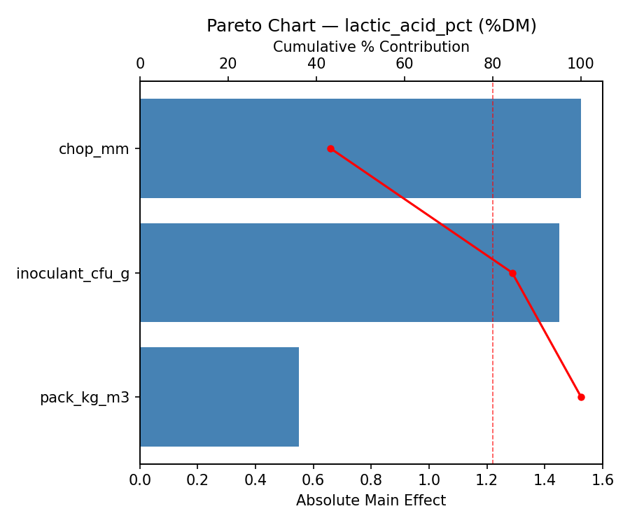
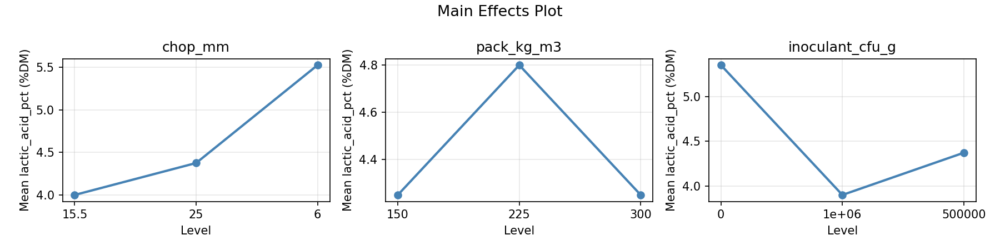
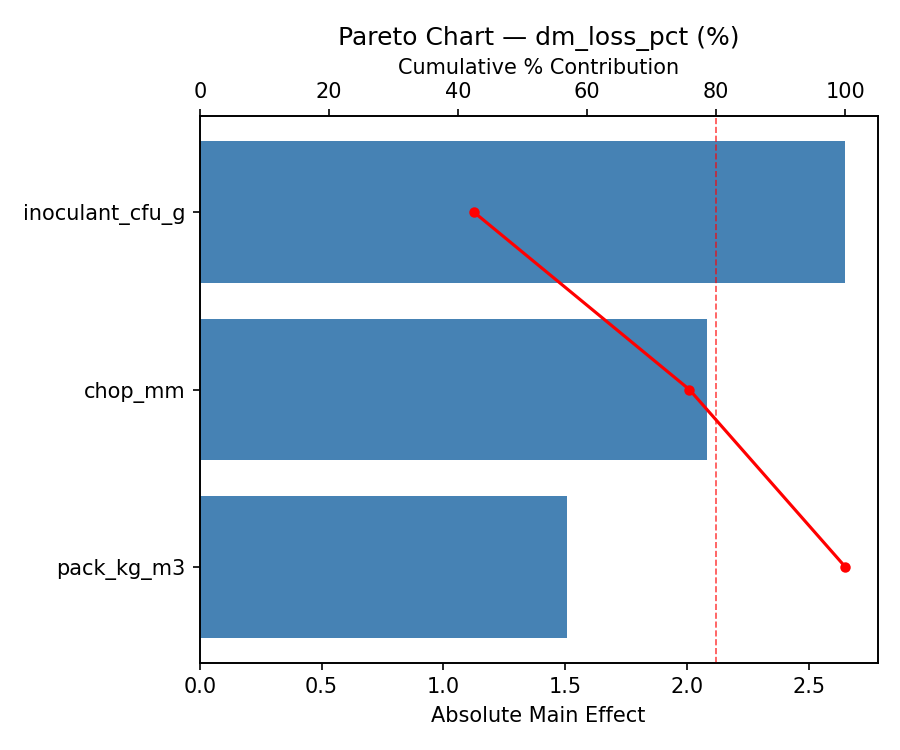
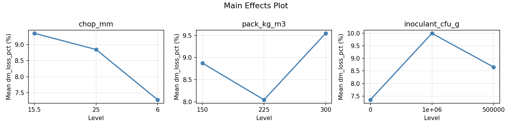
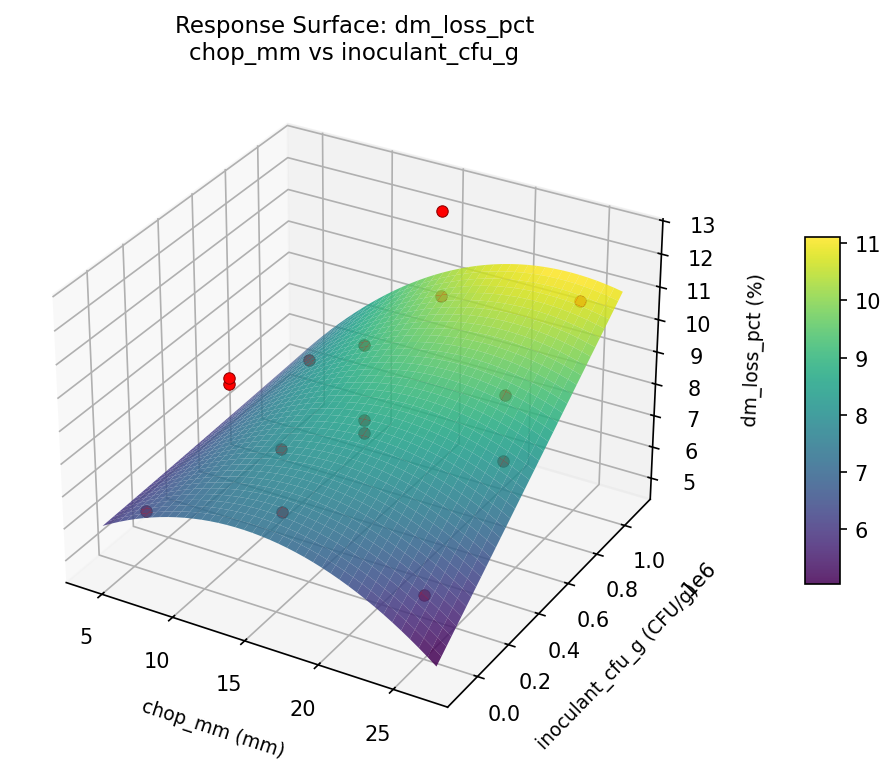
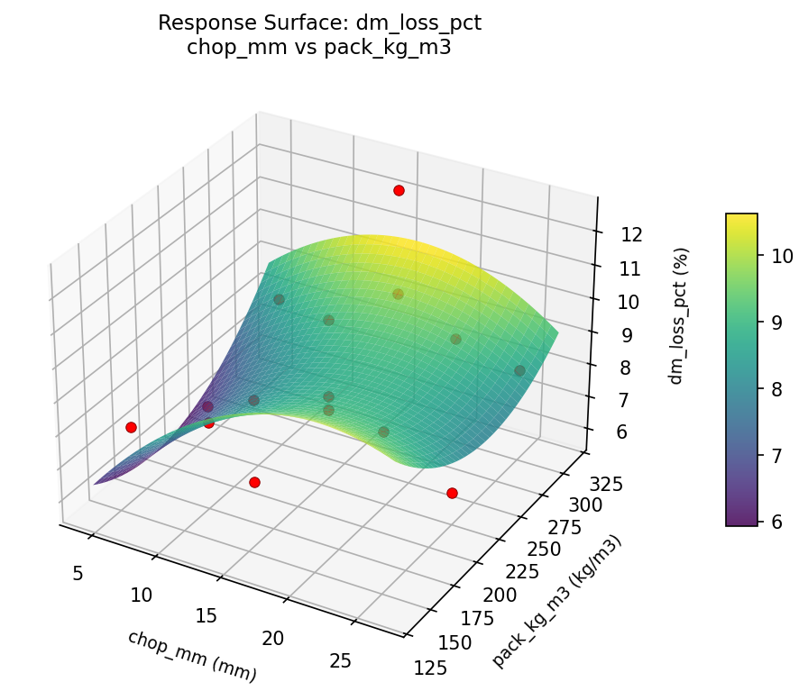
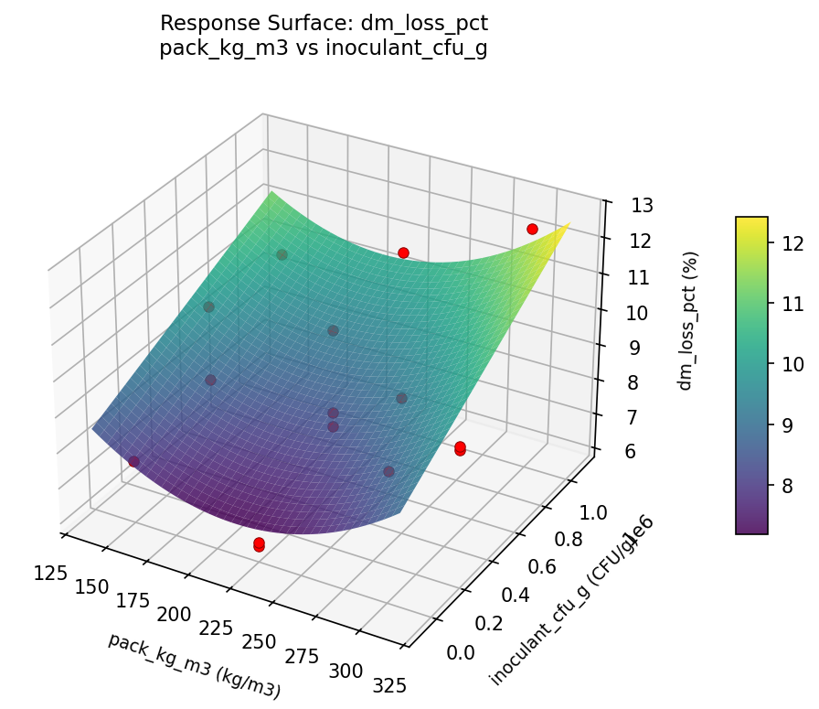
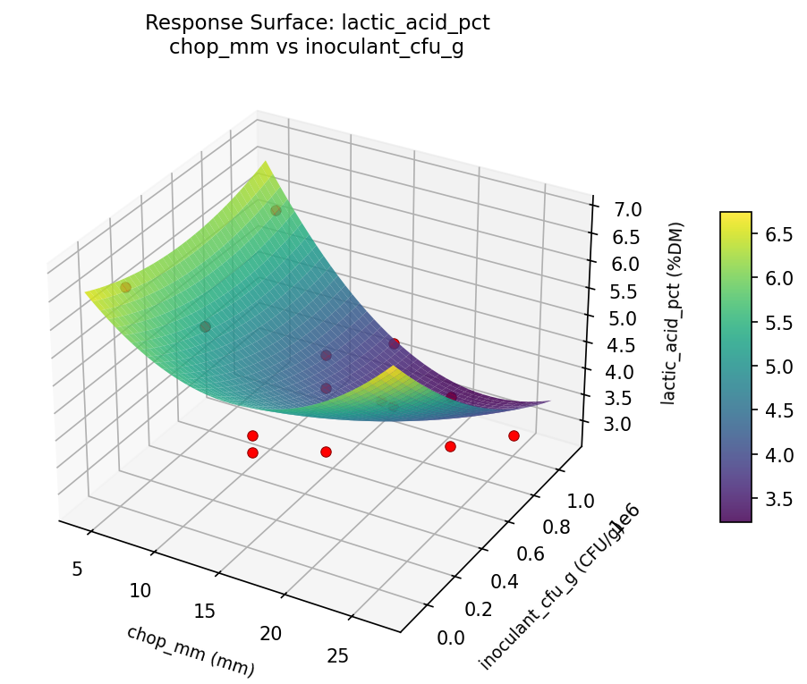
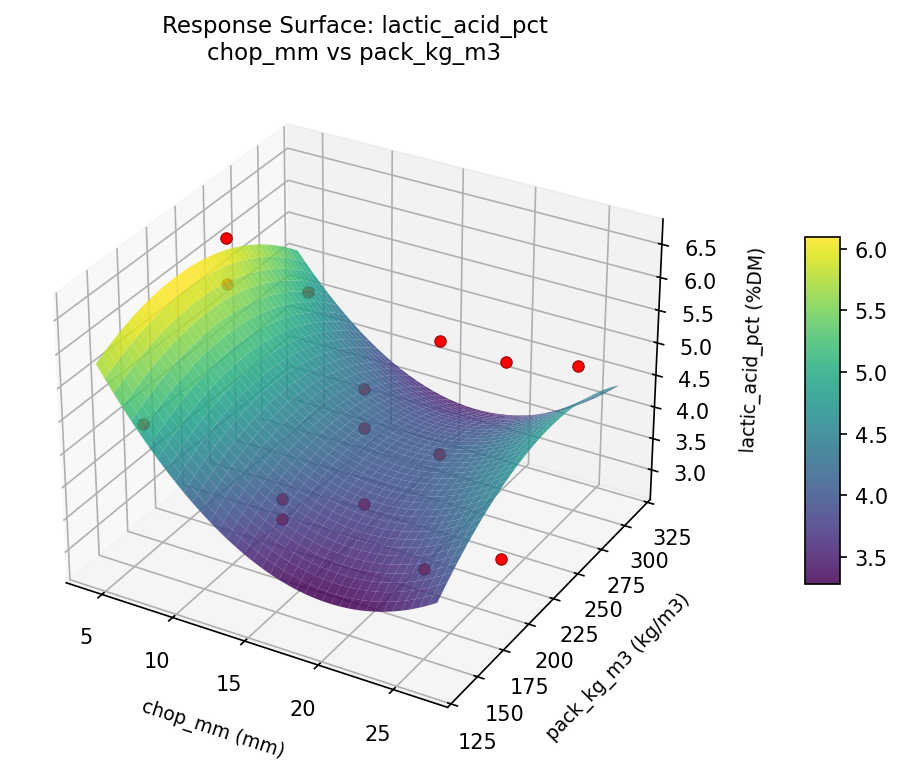
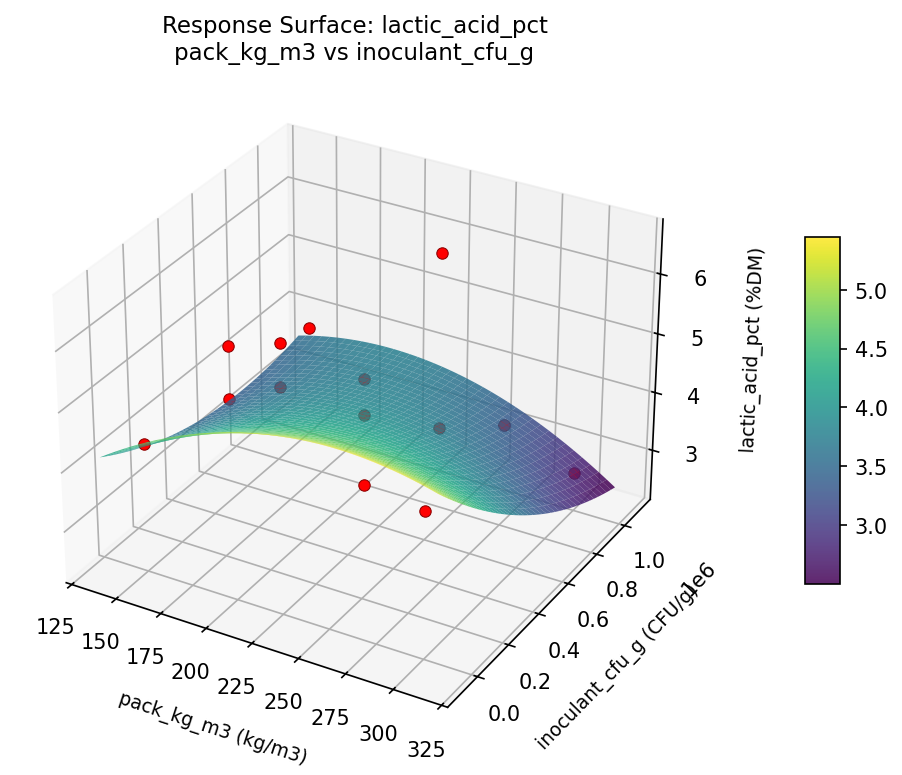

Summary
This experiment investigates silage fermentation quality. Box-Behnken design to maximize lactic acid and minimize dry matter loss by tuning chop length, packing density, and inoculant dose.
The design varies 3 factors: chop mm (mm), ranging from 6 to 25, pack kg m3 (kg/m3), ranging from 150 to 300, and inoculant cfu g (CFU/g), ranging from 0 to 1000000. The goal is to optimize 2 responses: lactic acid pct (%DM) (maximize) and dm loss pct (%) (minimize). Fixed conditions held constant across all runs include crop = corn, moisture = 65pct.
A Box-Behnken design was chosen because it efficiently fits quadratic models with 3 continuous factors while avoiding extreme corner combinations — requiring only 15 runs instead of the 8 needed for a full factorial at two levels.
Quadratic response surface models were fitted to capture potential curvature and factor interactions. The RSM contour plots below visualize how pairs of factors jointly affect each response.
Key Findings
For lactic acid pct, the most influential factors were chop mm (43.3%), inoculant cfu g (41.1%), pack kg m3 (15.6%). The best observed value was 6.6 (at chop mm = 25, pack kg m3 = 300, inoculant cfu g = 500000).
For dm loss pct, the most influential factors were inoculant cfu g (42.5%), chop mm (33.4%), pack kg m3 (24.2%). The best observed value was 6.2 (at chop mm = 25, pack kg m3 = 300, inoculant cfu g = 500000).
Recommended Next Steps
- Run confirmation experiments at the predicted optimal settings to validate the model.
- Consider whether any fixed factors should be varied in a future study.
Experimental Setup
Factors
| Factor | Low | High | Unit |
|---|
chop_mm | 6 | 25 | mm |
pack_kg_m3 | 150 | 300 | kg/m3 |
inoculant_cfu_g | 0 | 1000000 | CFU/g |
Fixed: crop = corn, moisture = 65pct
Responses
| Response | Direction | Unit |
|---|
lactic_acid_pct | ↑ maximize | %DM |
dm_loss_pct | ↓ minimize | % |
Configuration
{
"metadata": {
"name": "Silage Fermentation Quality",
"description": "Box-Behnken design to maximize lactic acid and minimize dry matter loss by tuning chop length, packing density, and inoculant dose"
},
"factors": [
{
"name": "chop_mm",
"levels": [
"6",
"25"
],
"type": "continuous",
"unit": "mm"
},
{
"name": "pack_kg_m3",
"levels": [
"150",
"300"
],
"type": "continuous",
"unit": "kg/m3"
},
{
"name": "inoculant_cfu_g",
"levels": [
"0",
"1000000"
],
"type": "continuous",
"unit": "CFU/g"
}
],
"fixed_factors": {
"crop": "corn",
"moisture": "65pct"
},
"responses": [
{
"name": "lactic_acid_pct",
"optimize": "maximize",
"unit": "%DM"
},
{
"name": "dm_loss_pct",
"optimize": "minimize",
"unit": "%"
}
],
"settings": {
"operation": "box_behnken",
"test_script": "use_cases/298_silage_fermentation/sim.sh"
}
}
Experimental Matrix
The Box-Behnken Design produces 15 runs. Each row is one experiment with specific factor settings.
| Run | chop_mm | pack_kg_m3 | inoculant_cfu_g |
|---|
| 1 | 15.5 | 150 | 0 |
| 2 | 15.5 | 225 | 500000 |
| 3 | 25 | 225 | 1e+06 |
| 4 | 25 | 225 | 0 |
| 5 | 15.5 | 225 | 500000 |
| 6 | 15.5 | 225 | 500000 |
| 7 | 6 | 225 | 1e+06 |
| 8 | 25 | 150 | 500000 |
| 9 | 15.5 | 150 | 1e+06 |
| 10 | 25 | 300 | 500000 |
| 11 | 6 | 225 | 0 |
| 12 | 15.5 | 300 | 1e+06 |
| 13 | 6 | 150 | 500000 |
| 14 | 6 | 300 | 500000 |
| 15 | 15.5 | 300 | 0 |
Step-by-Step Workflow
1
Preview the design
$ python doe.py info --config use_cases/298_silage_fermentation/config.json
2
Generate the runner script
$ python doe.py generate --config use_cases/298_silage_fermentation/config.json \
--output use_cases/298_silage_fermentation/results/run.sh --seed 42
3
Execute the experiments
$ bash use_cases/298_silage_fermentation/results/run.sh
4
Analyze results
$ python doe.py analyze --config use_cases/298_silage_fermentation/config.json
5
Get optimization recommendations
$ python doe.py optimize --config use_cases/298_silage_fermentation/config.json
6
Generate the HTML report
$ python doe.py report --config use_cases/298_silage_fermentation/config.json \
--output use_cases/298_silage_fermentation/results/report.html
Real-World Experiment Workflow
ℹ
Physical Farm & Livestock Experiment? Use the Manual Workflow
Livestock experiments involve real animals, feed, facilities, and biological responses that can't be simulated. The simulation script above is for demonstration. For your real experiments, use record, status, and export-worksheet.
$ python doe.py export-worksheet --config use_cases/298_silage_fermentation/config.json \
--format csv --output worksheet.csv
$ python doe.py status --config use_cases/298_silage_fermentation/config.json
$ python doe.py record --config use_cases/298_silage_fermentation/config.json --run 1
$ python doe.py analyze --config use_cases/298_silage_fermentation/config.json --partial
$ python doe.py analyze --config use_cases/298_silage_fermentation/config.json
$ python doe.py optimize --config use_cases/298_silage_fermentation/config.json
$ python doe.py report --config use_cases/298_silage_fermentation/config.json \
--output report.html
✔
Works Without a Test Script
The analysis pipeline doesn't care how results were produced. Record your measurements with record, and the full analysis, optimization, and reporting pipeline works identically. Use --partial to get early insights before all runs are complete.
Features Exercised
| Feature | Value |
|---|
| Design type | box_behnken |
| Factor types | continuous (all 3) |
| Arg style | double-dash |
| Responses | 2 (lactic_acid_pct ↑, dm_loss_pct ↓) |
| Total runs | 15 |
Analysis Results
Generated from actual experiment runs using the DOE Helper Tool.
Response: lactic_acid_pct
Top factors: chop_mm (43.3%), inoculant_cfu_g (41.1%), pack_kg_m3 (15.6%).
Pareto Chart

Main Effects Plot

Response: dm_loss_pct
Top factors: inoculant_cfu_g (42.5%), chop_mm (33.4%), pack_kg_m3 (24.2%).
Pareto Chart

Main Effects Plot

Response Surface Plots
3D surfaces fitted with quadratic RSM. Red dots are observed data points.
dm loss pct chop mm vs inoculant cfu g

dm loss pct chop mm vs pack kg m3

dm loss pct pack kg m3 vs inoculant cfu g

lactic acid pct chop mm vs inoculant cfu g

lactic acid pct chop mm vs pack kg m3

lactic acid pct pack kg m3 vs inoculant cfu g

Full Analysis Output
RSM surface: rsm_lactic_acid_pct_chop_mm_vs_pack_kg_m3.png
RSM surface: rsm_lactic_acid_pct_chop_mm_vs_inoculant_cfu_g.png
RSM surface: rsm_lactic_acid_pct_pack_kg_m3_vs_inoculant_cfu_g.png
RSM surface: rsm_dm_loss_pct_chop_mm_vs_pack_kg_m3.png
RSM surface: rsm_dm_loss_pct_chop_mm_vs_inoculant_cfu_g.png
RSM surface: rsm_dm_loss_pct_pack_kg_m3_vs_inoculant_cfu_g.png
=== Main Effects: lactic_acid_pct ===
Factor Effect Std Error % Contribution
--------------------------------------------------------------
chop_mm 1.5250 0.2834 43.3%
inoculant_cfu_g 1.4500 0.2834 41.1%
pack_kg_m3 0.5500 0.2834 15.6%
=== Summary Statistics: lactic_acid_pct ===
chop_mm:
Level N Mean Std Min Max
------------------------------------------------------------
15.5 7 4.0000 0.7746 2.8000 4.9000
25 4 4.3750 1.2790 2.9000 5.9000
6 4 5.5250 0.8846 4.8000 6.6000
pack_kg_m3:
Level N Mean Std Min Max
------------------------------------------------------------
150 4 4.2500 0.4041 3.9000 4.8000
225 7 4.8000 1.4387 2.9000 6.6000
300 4 4.2500 0.9713 2.8000 4.8000
inoculant_cfu_g:
Level N Mean Std Min Max
------------------------------------------------------------
0 4 5.3500 1.0847 4.3000 6.6000
1e+06 4 3.9000 1.4399 2.8000 5.9000
500000 7 4.3714 0.6676 3.1000 4.9000
=== Main Effects: dm_loss_pct ===
Factor Effect Std Error % Contribution
--------------------------------------------------------------
inoculant_cfu_g 2.6500 0.4678 42.5%
chop_mm 2.0821 0.4678 33.4%
pack_kg_m3 1.5071 0.4678 24.2%
=== Summary Statistics: dm_loss_pct ===
chop_mm:
Level N Mean Std Min Max
------------------------------------------------------------
15.5 7 9.3571 1.7813 7.5000 12.5000
25 4 8.8500 2.0680 6.3000 10.9000
6 4 7.2750 0.9777 6.2000 8.2000
pack_kg_m3:
Level N Mean Std Min Max
------------------------------------------------------------
150 4 8.8750 1.3175 7.5000 10.1000
225 7 8.0429 1.9182 6.2000 10.9000
300 4 9.5500 2.0535 8.1000 12.5000
inoculant_cfu_g:
Level N Mean Std Min Max
------------------------------------------------------------
0 4 7.3500 1.4888 6.2000 9.4000
1e+06 4 10.0000 2.4468 6.7000 12.5000
500000 7 8.6571 1.1028 7.7000 10.4000
Pareto chart (lactic_acid_pct): use_cases/298_silage_fermentation/results/analysis/pareto_lactic_acid_pct.png
Pareto chart (dm_loss_pct): use_cases/298_silage_fermentation/results/analysis/pareto_dm_loss_pct.png
Main effects (lactic_acid_pct): use_cases/298_silage_fermentation/results/analysis/main_effects_lactic_acid_pct.png
Main effects (dm_loss_pct): use_cases/298_silage_fermentation/results/analysis/main_effects_dm_loss_pct.png
Optimization Recommendations
=== Optimization: lactic_acid_pct ===
Direction: maximize
Best observed run: #12
chop_mm = 25
pack_kg_m3 = 300
inoculant_cfu_g = 500000
Value: 6.6
RSM Model (linear, R² = 0.1587, Adj R² = -0.0707):
Coefficients:
intercept +4.5067
chop_mm +0.5625
pack_kg_m3 -0.0750
inoculant_cfu_g +0.1125
RSM Model (quadratic, R² = 0.2682, Adj R² = -1.0489):
Coefficients:
intercept +4.5667
chop_mm +0.5625
pack_kg_m3 -0.0750
inoculant_cfu_g +0.1125
chop_mm*pack_kg_m3 -0.0500
chop_mm*inoculant_cfu_g +0.0250
pack_kg_m3*inoculant_cfu_g +0.4500
chop_mm^2 +0.2042
pack_kg_m3^2 +0.1292
inoculant_cfu_g^2 -0.4458
Curvature analysis:
inoculant_cfu_g coef=-0.4458 concave (has a maximum)
chop_mm coef=+0.2042 convex (has a minimum)
pack_kg_m3 coef=+0.1292 convex (has a minimum)
Notable interactions:
pack_kg_m3*inoculant_cfu_g coef=+0.4500 (synergistic)
Predicted optimum (from linear model):
chop_mm = 25
pack_kg_m3 = 225
inoculant_cfu_g = 1e+06
Predicted value: 5.1817
Model quality: Weak fit — consider adding center points or using a different design.
Factor importance:
1. chop_mm (effect: 1.1, contribution: 58.3%)
2. inoculant_cfu_g (effect: 0.6, contribution: 30.2%)
3. pack_kg_m3 (effect: 0.2, contribution: 11.5%)
=== Optimization: dm_loss_pct ===
Direction: minimize
Best observed run: #12
chop_mm = 25
pack_kg_m3 = 300
inoculant_cfu_g = 500000
Value: 6.2
RSM Model (linear, R² = 0.1529, Adj R² = -0.0781):
Coefficients:
intercept +8.6667
chop_mm -0.7375
pack_kg_m3 +0.5750
inoculant_cfu_g -0.0625
RSM Model (quadratic, R² = 0.3294, Adj R² = -0.8778):
Coefficients:
intercept +8.3000
chop_mm -0.7375
pack_kg_m3 +0.5750
inoculant_cfu_g -0.0625
chop_mm*pack_kg_m3 +0.0000
chop_mm*inoculant_cfu_g +0.6250
pack_kg_m3*inoculant_cfu_g -0.7500
chop_mm^2 -0.5625
pack_kg_m3^2 +0.5625
inoculant_cfu_g^2 +0.6875
Curvature analysis:
inoculant_cfu_g coef=+0.6875 convex (has a minimum)
chop_mm coef=-0.5625 concave (has a maximum)
pack_kg_m3 coef=+0.5625 convex (has a minimum)
Notable interactions:
pack_kg_m3*inoculant_cfu_g coef=-0.7500 (antagonistic)
chop_mm*inoculant_cfu_g coef=+0.6250 (synergistic)
Predicted optimum (from linear model):
chop_mm = 6
pack_kg_m3 = 300
inoculant_cfu_g = 500000
Predicted value: 9.9792
Model quality: Weak fit — consider adding center points or using a different design.
Factor importance:
1. chop_mm (effect: 1.5, contribution: 43.7%)
2. pack_kg_m3 (effect: 1.2, contribution: 34.1%)
3. inoculant_cfu_g (effect: 0.8, contribution: 22.2%)